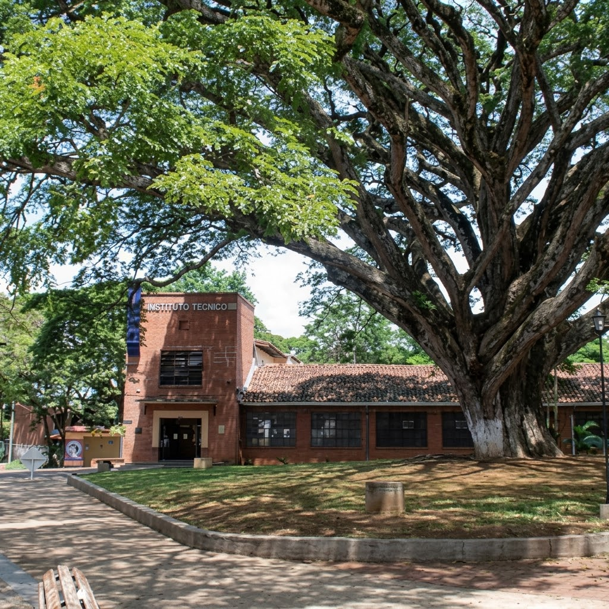
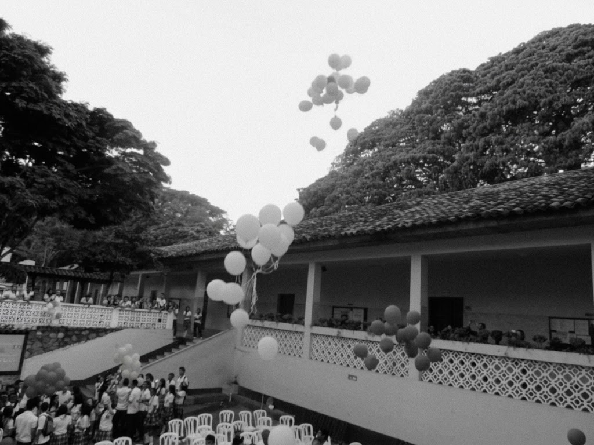
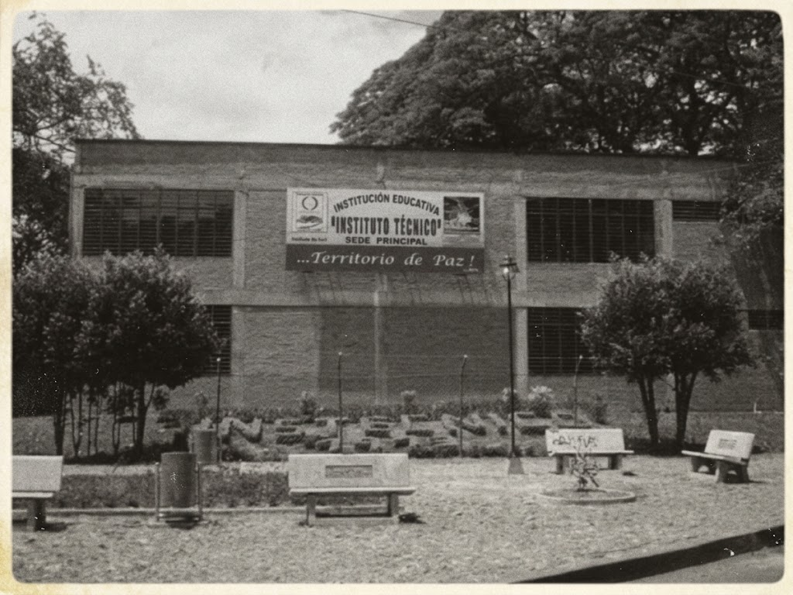
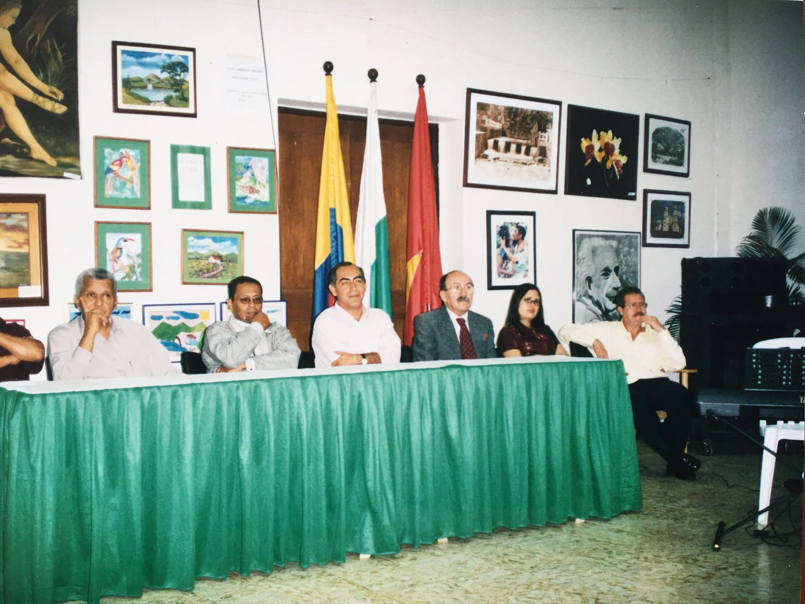
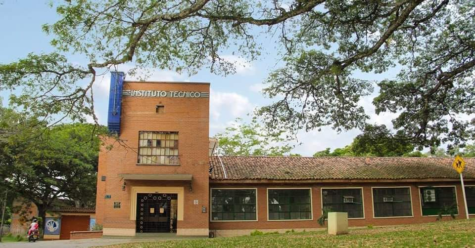

Un siglo de legado
Desde su fundación en 1913 hasta la transformación digital de hoy, descubre la historia de una institución que ha formado a generaciones enteras en Santander de Quilichao, Cauca.
Las Épocas
Un recorrido por los momentos que definieron nuestra institución.
Fundación y primeros pasos
El 3 de abril de 1913, mediante el Proyecto de Ordenanza No. 13 impulsado por el Diputado Marcial Lemus Nates, nace a la vida jurídica el Instituto Técnico como una entidad de carácter público en el Municipio de Santander de Quilichao, Cauca. Su creación respondió a la necesidad de formar a las nuevas generaciones en principios éticos, morales y científicos.
Su primer rector fue Rafael Tello R., quien sentó las bases de una educación rigurosa y comprometida con la región. En 1915, la institución comenzó a operar como entidad independiente en un local del centro del municipio, para luego trasladarse en 1949 a su sede actual en la Calle 3 # 7-68.
Consolidación y crecimiento
En 1944, el Instituto Técnico fue nacionalizado mediante la Ley 75 del 31 de diciembre, fortaleciendo su estructura y garantizando su sostenimiento por parte del Gobierno Nacional. Durante las décadas de 1930 y 1940, la institución adoptó un carácter mixto, aunque posteriormente se restableció la jornada masculina.
En 1960, entregó su primera promoción de bachilleres, un hito que marcó el desarrollo cultural y educativo de la región. Entre los primeros egresados se encuentran Aníbal Olaya, Óscar Medina, Eduardo Cabrera, Carlos Velasco y Silvio Medina, entre otros.

Consolidación · 1944-1960Expansión y jornadas
En 1972 se abrió la jornada nocturna, ampliando el acceso a la educación para jóvenes y adultos trabajadores. Tres años después, en 1975, se creó la jornada de la tarde, consolidando la oferta educativa para la creciente población estudiantil.
En 1985, la institución recuperó su carácter mixto, consolidándose como un espacio inclusivo y diverso que reflejaba los valores de la comunidad quilichagüeña. Durante esta época, el Instituto Técnico fue reconocido entre los 100 mejores colegios de Colombia, distinción reflejada en los galardones otorgados a sus mejores bachilleres por entidades como Coltejer, Ecopetrol y Andrés Bello.

Expansión · 1972-1985Fusión y reconocimiento
En 2003, mediante la Resolución Departamental No. 1181, se fusionaron los centros educativos Rafael Tello, José Edmundo Sandoval y Francisco de Paula Santander, dando origen a la actual Institución Educativa Instituto Técnico.
Un año después, en 2004, recibió la aprobación oficial mediante la Resolución 0448 de abril, consolidando su carácter como institución de educación formal. Bajo la dirección del Coordinador Ernesto Villegas, la institución pasó a tener una población escolar de más de 4.000 estudiantes en sus cuatro sedes.

Fusión · 2003-2004Era digital y modernización
En 2017, el Magister Gersaín León Franco implementó el primer sitio web oficial, marcando el inicio de la transformación digital de la institución. Su visión permitió que estudiantes, padres de familia y docentes tuvieran acceso a información oportuna y de calidad.
Hoy, con más de 3.300 estudiantes en sus cuatro sedes y una planta física que incluye 31 aulas, 4 laboratorios de química y física, 2 aulas de cómputo, cafetería y biblioteca, el Instituto Técnico continúa siendo un referente educativo, formando líderes con excelencia académica, valores y compromiso social. Este nuevo sitio web es la continuación de aquel legado.

Era Digital · 2017-PresenteLínea de Tiempo
Los hitos que marcaron nuestra trayectoria.
Fundación
Mediante la Ordenanza No. 13, impulsada por el Diputado Marcial Lemus Nates, nace el Instituto Técnico como entidad pública.
Nacionalización
Mediante la Ley 75 del 31 de diciembre, el Gobierno Nacional se hace cargo del sostenimiento y desarrollo de la institución.
Primera Promoción
Se gradúa la primera promoción de bachilleres, un hito para la región. Entre los egresados: Aníbal Olaya, Óscar Medina, Eduardo Cabrera y más.
Jornada Nocturna
Se abre la jornada nocturna para jóvenes y adultos trabajadores, ampliando el acceso a la educación.
Jornada de la Tarde
Se crea la jornada de la tarde, consolidando la oferta educativa para la creciente población estudiantil.
Carácter Mixto
La institución recupera su carácter mixto, consolidándose como un espacio inclusivo y diverso.
Fusión de Sedes
Mediante la Resolución Departamental No. 1181, se fusionan los centros educativos Rafael Tello, José E. Sandoval y Francisco de P. Santander.
Reconocimiento Oficial
Aprobación mediante Resolución Departamental No. 0448 de abril de 2004. La institución pasa a denominarse legalmente Institución Educativa Instituto Técnico.
Ley 1576 de 2012
El Congreso de Colombia se vincula oficialmente a la celebración de los 100 años de la institución y autoriza apropiaciones presupuestales para proyectos de infraestructura y dotación.
Primer Sitio Web
El Magister Gersaín León Franco implementa el primer sitio web institucional oficial, iniciando la transformación digital.
Nueva Rectoría
Isabel Cristina Cabal Godoy asume como rectora, con una visión enfocada en la calidad educativa y el bienestar estudiantil.
Mejoras de Infraestructura
Se inicia la construcción de cubiertas para las canchas polideportivas, beneficiando a más de 6.000 estudiantes.
Transformación Digital
Nuevo sitio web moderno, responsivo y con tecnología de punta para la comunidad educativa.
Hitos Destacados
Los momentos que definen nuestro legado. Desliza para explorar.
Nuestro Legado
Egresados que han dejado huella en Colombia y el mundo.
🏆 Entre los mejores de Colombia
El Instituto Técnico ha sido reconocido entre los 100 mejores colegios de Colombia, distinción reflejada en las condecoraciones otorgadas a sus mejores bachilleres por entidades como Coltejer, Ecopetrol y Andrés Bello.
Este reconocimiento es el resultado de décadas de compromiso con la excelencia académica y la formación integral de sus estudiantes, y ha sido ponente en foros nacionales convocados por el Ministerio de Educación.
🔬 Samir Alberto Medina Perlaza
Egresado destacado que a los 13 años recibió su título de bachiller. Continuó su formación en la Universidad del Cauca, luego se especializó en Bogotá y posteriormente realizó investigaciones en Estados Unidos y Francia.
Hoy es reconocido como uno de los mejores científicos jóvenes de Colombia, un orgullo para nuestra institución.
🎓 Generaciones de profesionales
A lo largo de más de un siglo, el Instituto Técnico ha formado a generaciones enteras de profesionales que hoy ocupan posiciones importantes en Colombia y el exterior.
Entre ellos: Jairo Renán Flórez Hurtado, Lyda Sabogal Paz, Renzo Mina, Arcelio Ararath Guazá, Néstor Racines Carabalí, Diana Patricia Ocampo Holguín y Richard Navia, entre muchos otros.
📜 Lema Institucional
Labor Omnia Vincit Improbus
Del latín: "El trabajo de todos vence las dificultades". Este aforismo, que adorna el escudo del colegio, resume el espíritu de esfuerzo, dedicación y superación que caracteriza a la comunidad del Instituto Técnico.
Símbolos Institucionales
Los elementos que representan nuestra identidad.
Escudo
Representa la historia y los valores de la institución. En él se inscribe nuestro lema "Labor Omnia Vincit Improbus", recordando que el esfuerzo constante vence cualquier obstáculo.
Bandera
Porta los colores que identifican a nuestra comunidad educativa, ondeando en cada acto cívico como símbolo del compromiso con la patria y la formación ciudadana.
Himno
Entonado con orgullo por estudiantes, docentes y egresados, recoge en sus estrofas el sentir de una institución que por más de un siglo ha formado a la juventud quilichagüeña.
Lema
"Labor Omnia Vincit Improbus"
Frase latina que significa "El trabajo de todos vence las dificultades". Es el principio que guía el esfuerzo diario de nuestra comunidad.
Reconocimiento Legal
El Congreso de Colombia se vinculó a nuestra historia.
Vinculación de la Nación al Centenario
A través de la Ley 1576 de 2012, el Congreso de Colombia se vinculó oficialmente a la celebración de los 100 años del Instituto Técnico y autorizó apropiaciones presupuestales para proyectos de infraestructura, como la terminación del aula máxima, la dotación de tableros electrónicos y la construcción de nuevas aulas.
Este reconocimiento legal reafirma el papel histórico y educativo de la institución en el desarrollo del norte del Cauca y su aporte a la educación pública colombiana.
La Institución Hoy
Un presente de crecimiento y transformación.
Nueva Rectoría
Desde el 28 de agosto de 2024, Isabel Cristina Cabal Godoy asume como rectora de la institución. Egresada de Trabajo Social de la Universidad del Valle, llega con una visión enfocada en mejorar la calidad educativa y fomentar un ambiente seguro y feliz para los estudiantes.
Mejoras de Infraestructura
El gobierno municipal inició un proyecto de mejoramiento de la infraestructura educativa en el Instituto Técnico y en la Institución Educativa Fernández Guerra. Se están construyendo cubiertas para las canchas polideportivas, beneficiando a más de 6.000 estudiantes de ambas instituciones.
Feria de Universidades
La institución fue sede de una Feria de Universidades, atrayendo a estudiantes de toda la región para explorar opciones de educación superior. Un espacio que se consolida como puente entre la educación media y la formación profesional.
Transformación Digital
Este nuevo sitio web institucional representa la continuación del legado del Magister Gersaín León Franco, con tecnología moderna, diseño responsivo y una experiencia pensada para toda la comunidad educativa. Un paso firme hacia el futuro, sin olvidar más de un siglo de historia.